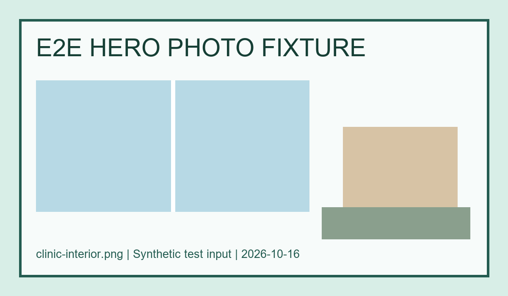

임플란트
검사와 사진 설명을 먼저 드리고, 치료 계획을 충분히 상의한 뒤 진행합니다.
편안하게 찾아올 수 있는 동네 치과
처음 오셔도 치료 전에 사진으로 충분히 설명드리고, 편하게 상담받으실 수 있도록 준비했어요.

솔바람치과의원은 치료 전에 사진으로 현재 상태를 함께 보고, 충분히 설명드린 뒤 결정하실 수 있도록 합니다.
통합치의학과 전문의. 치료 전 사진 설명을 중요하게 생각합니다.
갖춘 진료 장비를 한 줄씩 소개합니다. (예: 디지털 구강 스캐너, 개인 위생 관리 장비)
무리한 치료보다 필요한 치료를, 설명을 충분히 드리고 결정하시도록 돕겠습니다.
자주 찾으시는 진료를 먼저 소개합니다.
검사와 사진 설명을 먼저 드리고, 치료 계획을 충분히 상의한 뒤 진행합니다.
성인·청소년 교정 모두 가능합니다. 치아 상태에 맞는 장치를 상담 후 정합니다.
충치 치료, 스케일링, 신경치료, 잇몸 치료 등 기본 진료를 꼼꼼하게 봅니다.